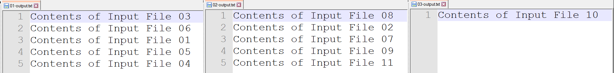
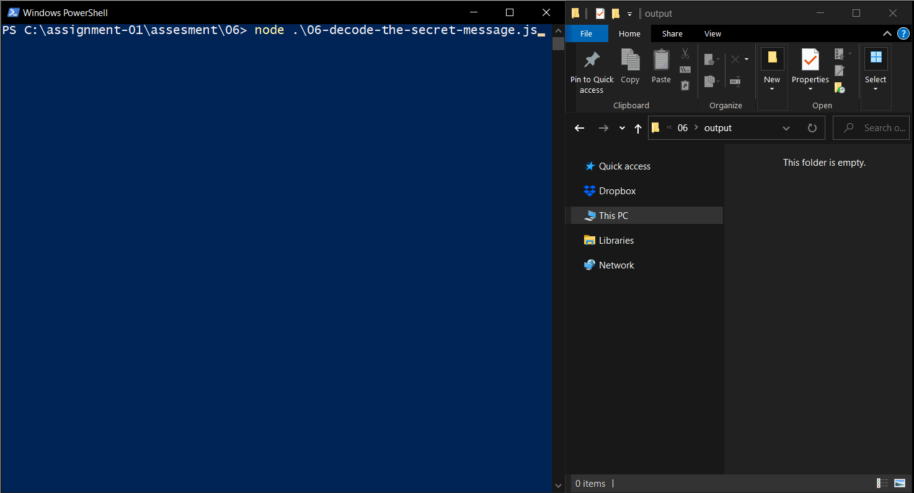

This assessment tests students understanding of the asynchronous programming paradigm.
Programming questions on exams will follow a similar structure. You can think of these as sample exam questions for any coding related questions.
Assume that the input can change at any time within the range specified. In many cases I've supplied sample inputs, but you should test your solution with a variety of inputs and avoid engineering a solution that only works for a single case.
Working with callbacks is a significant paradigm shift from the procedural styled programming you've been used to (in classes like 111, 211, 313). Tackling these problems without having a strong understanding of the architecture model will make these problems nearly impossible.
Download and run all the demo's and familiarize yourself with asynchronous programming.
Read / Watch the supplementary content
Download the exercise files
During examinations no credit will be awarded for students who submit procedural styled code, you must use callbacks in this course.
Each of the assessments in this course places some restrictions on what tools (libraries and constructs) you are allowed to use. This is to force students to think of problems in a certain way. The tools that I specifically put restrictions are abstract away the need to understand certain topics and putting metaphorical chains on you, will prevent students from working around the problem instead of attacking the core of it directly:
setTimeout and it's variants cannot be used. I spent a lot of time re-engineering this assignment to completely avoid using this function. The problem with setTimeout is it creates race conditions if used improperly.For each question refer to the list of Allowed Node.js API Functions to see which functions are relevant to the solution.
Writing N Files Asynchronously
fs.writeFile()n (0 < n < 100)n FilesCreate a program that asynchronously write n files 01-output.txt up to 99-output.txt to a subdirectory output. Each file should contain the text "Data-1". After each successful write, print a message to console with the filename. After all n files are finished writing, print an additional message Writing Complete. Run the script a few times, the filenames printed should almost never be in order.
A common mistake is to put the print statements inside the same loop that calls
fs.write(). This is not correct as the print statements will fire immediately (before a single write has been guaranteed to finish). Put them inside the callback function instead.
Use
String.padStart()to pad zeros.
Writing N Files Synchronously
fs.writeFile()n (0 < n < 100)n FilesCreate a program that synchronously write n files 01-output.txt up to 99-output.txt to a subdirectory output. Each file should contain the text "Data-2". After each successful fs.writeFile() print a message to console with the filename. After all n files are finished, print an additional message Writing Complete Run the script a few times, the filenames printed should always be in order.
Caution: For this assignment do not use
fs.writeFileSync(), the purpose of this question is to show understanding of how to write synchronous code using asynchronous methods.
In general check the Allowed Node.js API Functions.Utility functions that are part of JavaScript (eg.
Array.flat,Array.join,Array.split) are allowed. (Anything on MDN is fine)
Personal Hosts File
Allowed Node.js API Functions: fs.readFile(), fs.writeFile(), dns.resolve()
Disallowed: fs.appendFile()
Input: File: domains.txt
Output: File hosts.txt
Write a program that reads from a file domains.txt residing in a directory input. It contains a list of valid domains one on each line, resolve each domain found to IP addresses, and save the results into a file hosts.txt residing in a directory output. The output format should be ip_address, a tab character (\t), domain_name.
The order in which the results appear does not matter. (But see Ungraded Additional Question)
Sample Output:
149.4.199.190 venus.cs.qc.cuny.edu149.4.211.163 cs.qc.cuny.edu
Possibly helpful utility Functions
Ungraded Additional Question
The order that the IP addresses come back is not guaranteed to match the order the domains came in, however a minor change can be made to your code such that this becomes true. Refer to Example 10: Preserving Order
Four synchronous tasks
fs.readFile(), zlib.inflate(), dns.resolve(), fs.writeFile()domain.deflatedip_address.txt
Write a program that:
domain.deflated (Use {encoding:null} ), zlib.inflate(), covert the resulting buffer to a string using .toString("utf8") the decompressed data will be a valid domain that resolves to a single IP address.dns.resolve() convert the domain into an IP address.ip_address.txt
batch-b
Allowed Node.js API Functions: fs.readFile(), fs.writeFile()
I've also usedfs.readdirSync() in the template which will get the filenames of all files in a directory and put them into an array.
Input:
n (0 < n < 100) Filesb (0 < b < n)Create a program that asynchronously reads n files 01-input.txt up to 99-input.txt.
For every b files read, write the contents of those input files to the next output file. Use "utf8" encoding. If there are fewer than b input files remaining, put the remaining content in the last output file.
Use the format 01-output.txt to m-output.txt (Pad filename with 0 if m < 10)
In total there should be m files where m = Math.Ceil(n / b)
Example
n = 11 (01-input.txt to 11-input.txt)
b = 5 (batch 5 at a time)

m = 3 so we have three files 01-output.txt, 02-output.txt, and 03-output.txt
Possibly helpful utility Functions
Math.ceil(), Array.push(), Array.slice() , String.join()
Try to replicate the example first, hard code
n=11andb=5, from there try generalizing the solution.
Decode the secret message
Allowed Node.js API Functions: fs.readFile(), fs.writeFile(), zlib.inflate(), Buffer.concat()
I've also usedfs.readdirSync() in the template which will get the filenames of all files in a directory and put them into an array.
Input:
n Files (0 < n < 100)
DEFLATE compression algorithmOutput: Binary File (secret-message.zip)
Create a program that reads n files 01 up to 99.
It will then decompress the contents of each one and concatenate the results into a single buffer. The order that they are concatenated in should match the filename ordering.
Save the file as secret-message.zip inside the output directory
Using a standard file decompression tool unzip the result. If the decompression succeeds you've found the secret message, otherwise there's a bug in your code.

All data is binary in this problem and must be treated as a buffer, avoid using "utf8" encoding.